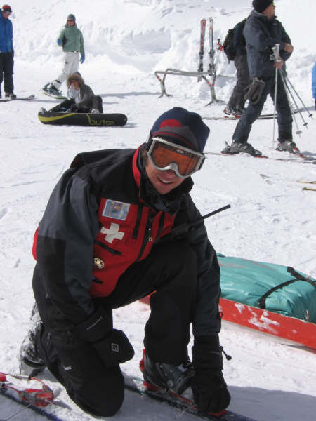
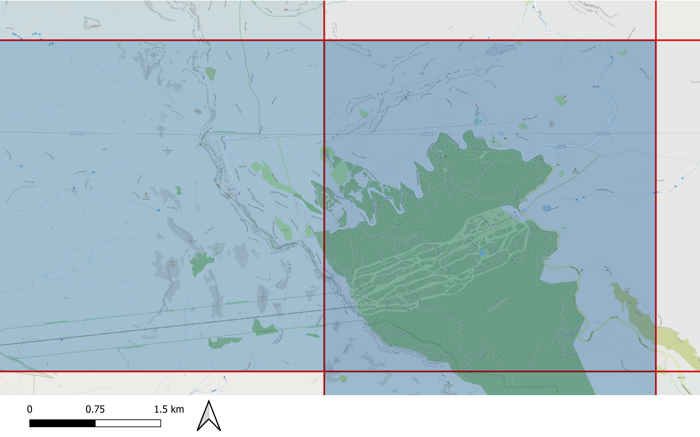
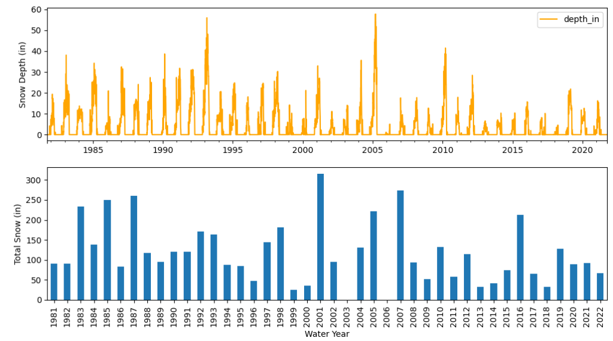
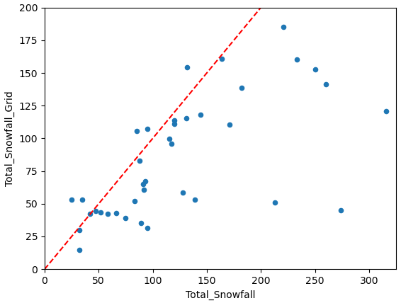
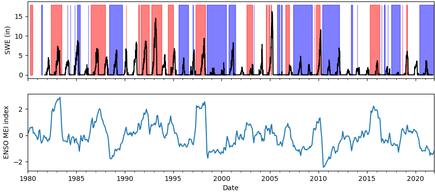
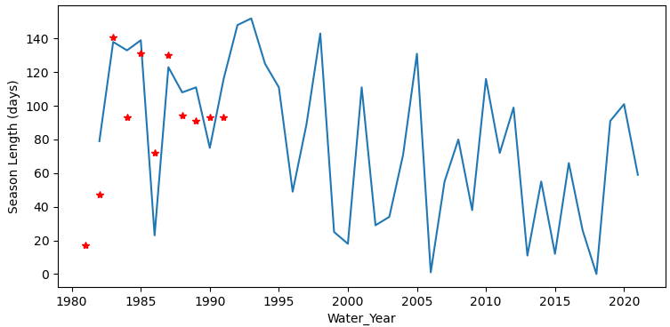
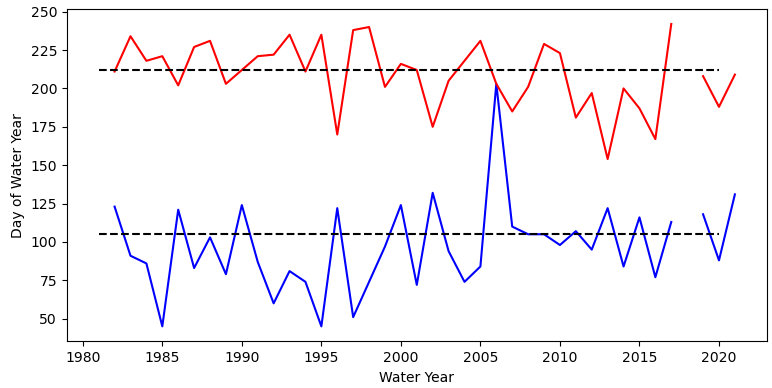

A few months ago I found out my local ski area, Sandia Peak, preemptively chose not to open for the upcoming ski season (2022/2023). It isn’t that unusual for Sandia Peak to stay closed for the season, and they were also closed last season. However, I had thought the decision to stay closed is typically made around January, after the snow pack begins to form. At that point, if the early season snowfall is too low, the season isn’t long enough offset operating costs and it isn’t worth opening. Why was this year different?
I wasn't the only one surprised about the decision as it generated a bit of social media attention. A discussion was started on Reddit and there was even an active Twitter thread. I first learned the news via social media, and my initial reaction was similar to that of other Reddit users:
Is the snow fall at Sandia becoming too unreliable to operate a ski area? Is climate change to blame?
Interviews with local media outlets gave more context into the decision (see ABQ journal and KOBTV), and the ski area confirmed that declining snowfall and a shorter ski season were a primary factor:
"Nobody operates a ski area for a month, and that's what the winter's been giving us" - Ben Abruzzo
Albuquerque Journal
Less snow means decreased revenues which makes maintaining existing ski area infrastructure more challenging. Furthermore, staffing has become a real challenge for Sandia despite raising wages and active recruiting efforts (KOBTV). After all, why would you apply for a job if there is a good chance the business doesn’t open.

Ski Patrol 2006/2007Sandia is far from the only ski area in New Mexico. Ski Santa Fe isn’t too far away and gets more snow due to being farther north and higher elevation. Nonetheless, Sandia Peak Ski area is an important part of the local community with a history going back to the 1930’s (Shunny 1987). Like many from the area, I first learned to ski at Sandia. I also volunteered with the Sandia Peak Ski Patrol in 2006/2007. So, I don't want to see Sandia Peak shut down. Furthermore, Sandia Peak is not the only ski area at risk from climate change. Understanding what is going on there could give some indication of what might happen to other ski areas around the world.
Questions:
-
How has the Sandia Peak snow pack changed over the years?
-
What is causing the changes?
Sandia Snowfall Data
In my experience, when you mention Sandia Peak ski area in a conversation, you commonly hear people describe the skiing as being much better in the 80’s and 90’s. However, the year I was on Ski Patrol was definitely more recent than the 90’s, and I remember that year being quite good. But memory can often be unreliable, so I wanted to find more solid data with which I could evaluate changes and trends. Aside from the ski area itself, there are no long term snow records in the Sandias (that I know of). Sandia Peak was nice enough to provide me with a record of total snowfall for each year going back to 1980. That is welcome, but I also wanted to analyze a record of daily snow depth values - the longer the better.
Luckily, my experience participating in a machine learning competition earlier this year (see Machine Learning for Snow Hydrology) clued me into a dataset from the University of Arizona (UA) that provides reconstructed SWE/snowdepth across the entire Western US going back to 1981 (Zeng 2018, Broxton 2016). The dataset, which I will refer to as the “4km snow grid”, provides both daily SWE and snow depth values on a 4km square grid (see figure 1). Unlike a point measurement of snow, the value of SWE in a particular grid cell for a given date corresponds to a relatively large area, bigger than the entire ski area itself. The grid cell value might be thought of as an average value for all the snow within the grid cell, which could be hard to assess if the grid cell of interest is over highly complex terrain with a heterogeneous snow pack. However, by chance, the grid cell nearest Sandia Peak ski area is fairly well centered over the ski area itself giving me more confidence in the representativeness of the data.

Figure 1 - 4km snow grid overlay on map of Sandia Ski Area. The blue colors represent SWE values in each grid on 3/20/2005. SWE totaled 394 mm in the grid cell over the ski area on that date.*The 4km snow grid was created using point measurements of snow from Snotel and the NWS Coop network, as well as, gridded weather data from PRISM (https://prism.oregonstate.edu/). Essentially, the snow measurements are interpolated in such a way as to also take into account melting and accumulation as determined using temperatures and precipitation modeled by PRISM. PRISM data itself is created using a similar approach, aggregating data from weather stations incorporating elevation and other constraints (Daly and Bryant 2013). Dawson et al. 2018 compare the 4km snow grid to independent measurements made from aircraft in the Sierras and find good correlations in both snow depth and SWE. They also find good agreement when comparing snow cover extent output by the model to that measured by satellite. Furthermore, the 4km dataset was utilized successfully by UA researchers in the machine learning contest from earlier this year (see my follow-up blog post).
Extracting a time series of SWE/snow depth data over the Sandia Ski Area from the 4km grid was a bit challenging, and I have stored the scripts I used on Github (https://github.com/chrisrycx/sandia-snow-history) if anyone wishes to do a similar analysis. The complete data set is stored online by year as netCDF files on the order of 70 Mb each. I downloaded all the files and merged all the years together while isolating only the grid cells of northern NM. The resulting netCDF contains every year of data, but is a much more manageable file size. I then used the Python XArray library to automatically locate the grid cell nearest the lat/long of the center of the ski area and output the time series of values.
Given that the 4km SWE data set is a reconstruction, not actual measurements, I wanted to get a sense for how it compares to real data. First, I compared data for a grid cell located in the Jemez mountains to the Quemazon snotel station, located within that grid cell. I chose this location because the Quemazon site has similar elevation and aspect to Sandia Ski Area, however, it isn’t the closest Snotel site to the Sandias. In general, this comparison is a bit circular, since the 4km grid data itself is derived from Snotel data, but it is still useful for verifying nothing unusual is happening. For the most part, the two time series are similar, except the grid values are roughly 60% of the Snotel values (analysis available on Github). This is reasonable because the grid values represent an average of a much larger area that is likely to include lower elevations with less snow cover.

Figure 2: (Top) Snow depths at Sandia from 4km grid. (Bottom) Total snow by water year as measured by Sandia Ski Area.Next, I compared the 4 km grid snow depth values at the ski area to snow totals given to me by the ski area (figure 2). While there is some general consistency between peak snow depth and total snow fall, a direct comparison is apples to oranges. Total snowfall doesn't translate into snow depth because there is both melting and compaction of the snow after it falls. Nonetheless, I converted the snow depth time series to total snowfall by summing all the day to day increases in snow depth for each water year (figure 3).

Figure 3: Total yearly snowfall from Sandia Peak ski area compared to total snowfall as calculated from 4km grid time series. Dotted line is where the two are equal.As expected, a majority of the total yearly snowfall measured by the ski area exceeds total yearly snowfall as calculated from the 4km grid data. However, there are 5 years where the opposite is the case. It might be possible for the grid value to exceed the measured value if there were a significant amount of wind deposited snow, but my guess is that the gridded data is in error. Perhaps this gives a vague sense of the amount of error in the dataset. My takeaway is that the 4km snow grid is consistent with the ski area observations for the most part.
Snow History
Figure 2 shows a history of snow depth values at Sandia Peak from the 1980’s thru last year. My general impression is that there is an overall reduction of peak snow depth in the 2000’s, but I don’t see any obvious linear trends. There have been some really bad years (2006, 2018), but 2005 saw the highest depths in the dataset. The most recent few years even look fairly similar to the mid 90’s. This time series is reminiscent of the NM statewide precipitation time series (see NMBGMR 2022). NM sees cycles of precipitation as determined by different ocean temperature cycles and weather patterns, and certain alignments of these ocean cycles lead to increases and decreases in precipitation on decadal timescales.
When it comes to predicting snow fall in the southwest, El Nino Southern Oscillation (ENSO) is perhaps one of the better known influencers of regional climate. ENSO is defined by patterns of ocean surface temperatures along the equatorial Pacific, and can have global affects (Barry and Chorley 2003, also see NWS Winter Outlook). It is fairly common knowledge among skiers that during the negative ENSO phase (la nina), snowfall is expected to decrease in New Mexico. This notion is supported by research, so I compared ENSO values to SWE values (figure 4).

Figure 4 - (Top) SWE time series with shaded regions associated with El Nino (red) and La Nina (blue) episodes. (Bottom) ENSO MEI index. El nino/la nina episodes correspond to MEI exceeding +/- 0.5.I don’t see any clear patterns between ENSO and SWE at Sandia (at least from this plot). Many of the “average” looking years took place during La Nina and some of the lowest years happened during ENSO neutral conditions. I do get the impression ENSO was generally more positive during the 80’s and 90’s. I think the takeaway is that ENSO by itself doesn't control snow fall in the Sandias. Rather, precipitation fluctuates based on the combination of ENSO and a number of other factors such the Pacific Decadal Oscillation and Madden Julian Oscillation (see NWS Winter Outlook).
Even if the total amount of snow was unchanging over the years, any changes in the timing of snow accumulation and melting will still have a significant affect on the ski business, not to mention local hydrology. To assess seasonal changes, I extracted “season length” from the snow depth time series (figure 5). I defined the season as the number of days between the first and last date where snow depth exceeded 5 inches. The 5 inch threshold was a bit arbitrary, but I found that snow depths tended to continue increasing through the winter after 5 inches is reached. Lower thresholds may be reached in early season only to melt out before more substantial accumulations.

Figure 5: Season length based on 5in snow depth threshold. Red stars are ski area season length as reported by Shunny 1992.Figure 5 shows how season length has varied through time. I only have a few years of data, but season length values agree reasonably with the number of days the ski area was open in a particular year (Shunny 1992). In contrast to the snow depth time series, season length does appear to have an obvious downward trend. This trend is consistent with increasing average temperature associated with climate change. Warmer temperatures on average affect season length by both decreasing the amount of snow in the fall and increasing the rate of melt in the spring.

Figure 6: Starting date (blue) and ending date (red) of the "ski season". Dotted line marks dates: December 15th (bottom) and April 1 (Top).When the starting date and ending date of the season are compared, both have opposite trends that are narrowing the season length (figure 6). It also appears the starting date is getting later at a faster rate than the ending date getting earlier. It is looking increasing likely that the start of the season will take place after the winter holidays, a time period ski areas count on for a big portion of sales.
Conclusion
Ultimately, it would be great to reconstruct snow pack going all the way back to the 1940’s when Sandia Peak first began as “La Madera” ski area. That would really provide the full context for the challenges Sandia Peak ski area faces today. Nonetheless, this 40 year time series give some perspective on what the future might hold for skiing in the Sandias. It seems evident that climate change is reducing season length, perhaps unsustainably. On the other hand, big years are still in the cards. Unfortunately, of the many bad things about climate change, one is that it is harder to predict the future based on the past. NM is due for increased precipitation, but maybe things are different now.
References
Barry, R.G. and R.J. Chorley, 2003. Atmosphere, weather and climate. Routledge.
Broxton, P. D., N. Dawson, and X. Zeng, 2016, Linking snowfall and snow accumulation to generate spatial maps of SWE and snow depth, Earth and Space Science, 3, 246–256, doi:10.1002/2016EA000174.
Daly, C. and K. Bryant, 2013, The PRISM Climate and Weather System - An Introduction, Accessed from https://prism.oregonstate.edu/documents/PRISM_history_jun2013.pdf
National Weather Service - Albuquerque Office, 2022, 2022-2023 Winter Outlook, Accessed from https://www.weather.gov/media/abq/Briefings/202223WinterOutlook.pdf
New Mexico Bureau of Geology and Mineral Resources, 2022, Climate change in New Mexico over the next 50 years: Impacts on water resources, New Mexico Bureau of Geology and Mineral Resources, Bulletin 164.
Shunny, J., 1987, The Sandia Peak and La Madera Ski Patrol - A History 1937 to 1986, Adobe Press
Shunny, J., 1992, The Sandia Peak and La Madera Ski Patrol - A History 1986 to 1991, Adobe Press
Zeng, X., Broxton, P., and N. Dawson, 2018, Snowpack change from 1982 to 2016 over conterminous United States, Geophysical Research Letters, 45, 12, 940–12, 947. https://doi.org/10.1029/2018GL079621.